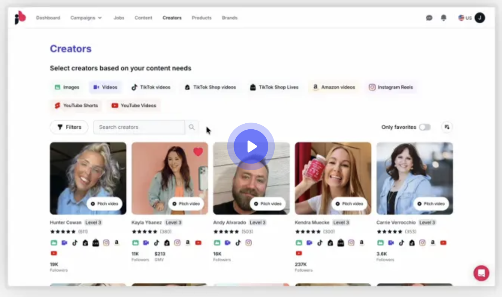

JoinBrands is one of the largest creator marketplaces available, 4M+ creators, unlimited campaigns, and support for TikTok, Instagram, YouTube, and Amazon content in one dashboard. Trusted by 100,000+ brands, it covers a wide range of campaign types. But its pricing model is layered in a way that makes the true cost-per-video higher than it first appears, and the workflow requires active management of creator relationships, briefing, and revision cycles. If that overhead doesn't fit your team's bandwidth or budget, these four alternatives solve the same content need with less friction.
JoinBrands works well for brands with the team bandwidth to manage creator campaigns at scale. But several structural issues consistently push brands to look elsewhere:

UGCDrop is the strongest JoinBrands alternative for performance marketers who need real human UGC without the overhead of managing creator relationships. Instead of briefing creators, waiting on applications, tracking revisions, and paying platform fees on top of every video, UGCDrop provides instant access to a 10,000+ pre-filmed library, searchable by emotion, age, gender, setting, and clothing style. At $28/month for 30 clips ($0.93 each), there are no hidden fees, no revision rounds, and no minimum campaign sizes.
The key distinction versus JoinBrands: UGCDrop's clips are pre-filmed general content rather than custom product-specific videos. This makes UGCDrop ideal for hook testing, emotional angle exploration, and rapid creative iteration, where volume and speed matter more than product placement. Many performance teams use UGCDrop to validate creative directions at $0.93/clip, then commission custom product-specific content only for the hooks that prove out.
Billo is the strongest JoinBrands alternative when you want custom UGC production with performance data built into every brief. Where JoinBrands is a self-managed marketplace where you source and manage creators independently, Billo functions as a data-led production system, briefs are generated from performance insights across 326,000+ ads and $500M in purchase value, creators are matched based on proven performance, and ad variations are generated from existing footage automatically. The 22,000+ brands on Billo benefit from a managed workflow that JoinBrands' self-serve model doesn't replicate.
Billo's $99/video cost is higher than JoinBrands' $25+ entry point, but the effective comparison after JoinBrands' subscription fees, platform fees, and time-spent managing campaigns is closer than the headline numbers suggest. Billo requires a demo call; JoinBrands offers a Free tier for immediate access.
Insense is the strongest JoinBrands alternative for brands running coordinated UGC production and paid social amplification in a single workflow. JoinBrands generates TikTok Spark Codes and Instagram Partnership Ad Codes for creators, but Insense goes further, with built-in TikTok Shop affiliate management, influencer outreach to 7M+ profiles, and product seeding tools all feeding into the same content pipeline. For performance marketing teams that currently use JoinBrands for UGC and a separate tool for influencer outreach, Insense consolidates both.
The cost structure is higher than JoinBrands: $500–800/month platform fee plus separate creator payments. But for brands at enterprise scale where content velocity and multi-channel performance drive revenue, Insense's integrated stack justifies the premium over JoinBrands' more fragmented self-serve model.
Creatify is the strongest JoinBrands alternative when the goal is eliminating creator management entirely. Where JoinBrands requires building campaigns, sourcing creators, managing briefs, and tracking revisions, Creatify generates AI-avatar UGC ads from a product URL in minutes. At $39–99/month with no platform fees and no per-video creator costs, Creatify's cost model is simpler and more predictable than JoinBrands' layered structure.
The trade-off is authenticity: Creatify uses AI avatars (300 on Starter, 1,500 on Pro) rather than real human creators. For performance teams that prioritize speed, cost, and volume of variants over real-human presence in the video, Creatify removes all the friction that JoinBrands' creator-managed model introduces. For campaigns where authentic human faces are important to performance, real-human alternatives like UGCDrop or Billo outperform.
| Platform | Monthly Fee | Cost Per Video | Turnaround | Real Humans |
|---|---|---|---|---|
| UGCDrop | $28/month | $0.93/clip | Instant | Yes |
| Billo | Demo required | $99/video | 7–12 days | Yes |
| Insense | $500–800/month | $50–200+ | 7–14 days | Yes |
| Creatify | $39–99/month | ~$0.40/credit | Minutes | No (AI) |
| JoinBrands | $0–499/month | $25+ + 8–15% | 2–7 days | Yes |

No platform fees, no creator management, no briefing overhead. Download 30 real human UGC clips instantly for what JoinBrands charges for a single video plus fees.
Start Sourcing Free